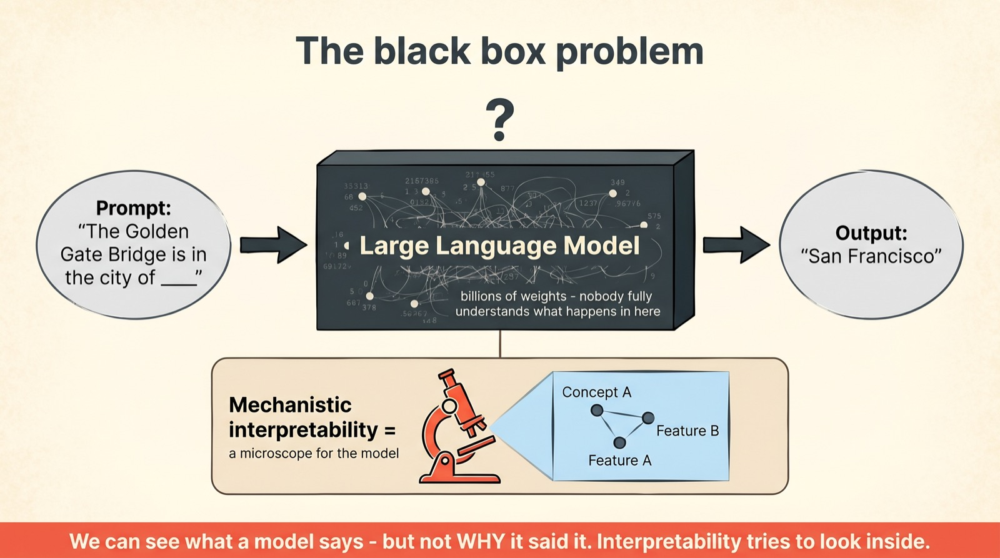
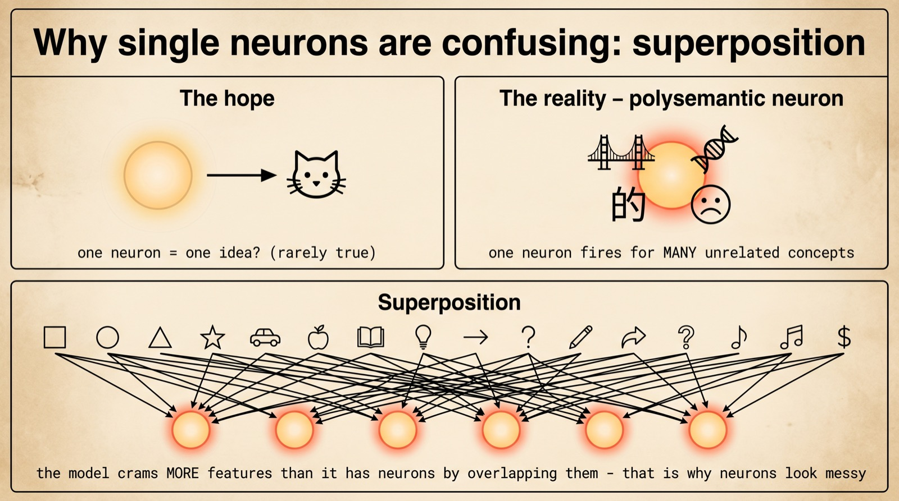
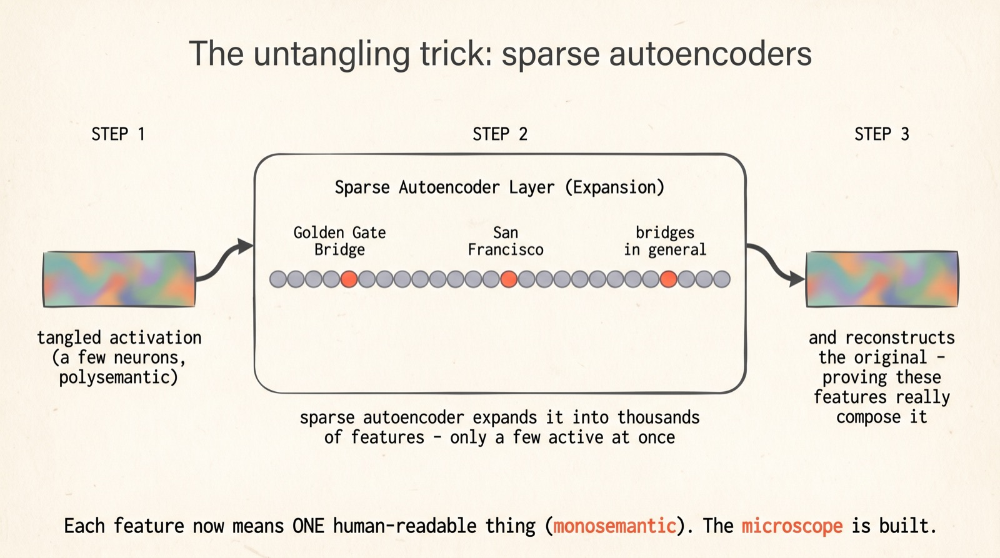
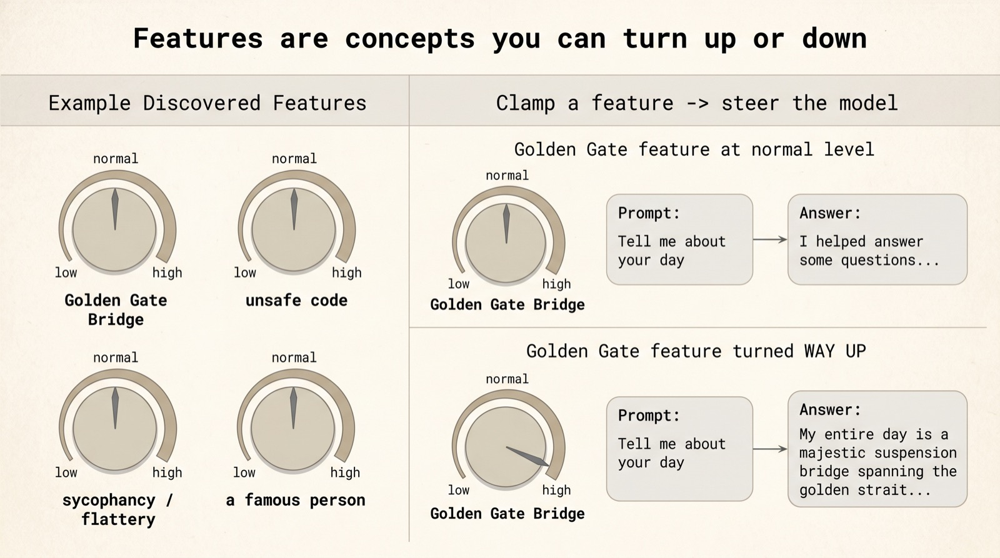
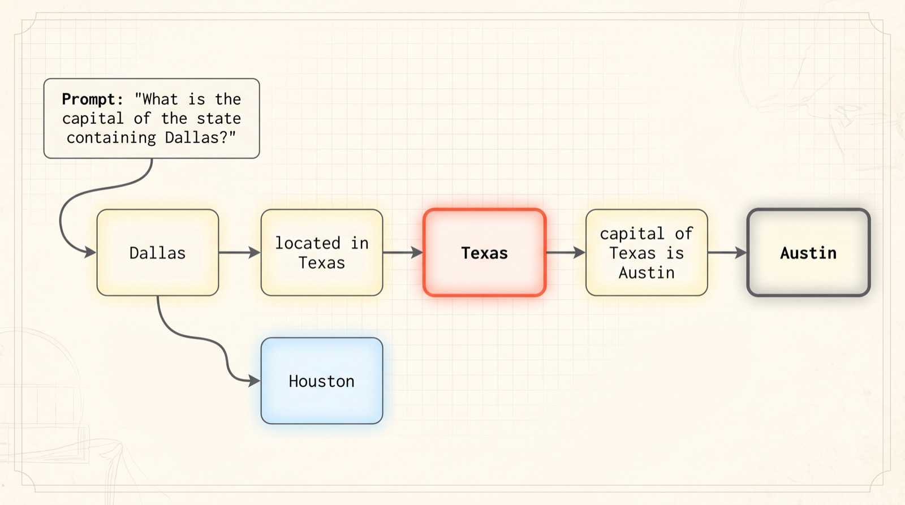
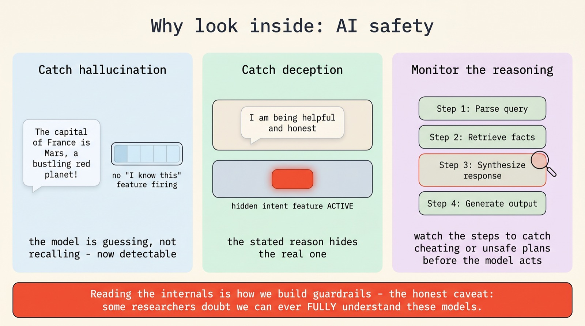

MIT Tech Review's #1 breakthrough of 2026
The AI
microscope
We build these models, but we don't understand them. Mechanistic interpretability is the effort to change that — to open the black box, find the concepts inside, and trace exactly how a thought forms. Here is how the microscope works.
From tangled neurons to clean human-readable features, from features to circuits, all the way to "Golden Gate Claude" — a visual tour of how researchers learned to read a model's mind, and why it matters for keeping AI safe.
Scroll to begin.
↓
The black box we built
Here is the strangest fact about modern AI: the people who build these models do not understand them. We know how to train a language model — pour in data, adjust billions of numbers until it predicts the next word well — but the thing that results is a black box. We can see what goes in and what comes out, and almost nothing about why.
Ask a model "the Golden Gate Bridge is in the city of ___" and it answers "San Francisco." Somewhere inside, across billions of weights, a computation happened that produced that word rather than another. But pointing to where that knowledge lives, or how the answer was assembled, was for years simply impossible. The model worked; nobody could say why.

This is what makes mechanistic interpretability — named MIT Technology Review's #1 breakthrough technology of 2026 — such a big deal. Its goal is audacious: to map the concepts inside a model and the pathways between them, the way a neuroscientist maps a brain. Not "the model is 92% accurate," but "this is the part that knows about bridges, and here is the wire that connects it to San Francisco." Let's build that microscope, one idea at a time.
Why neurons are confusing
The obvious first guess is that a model is like a tidy filing cabinet: one neuron for "cat," another for "Paris," another for "sadness." If that were true, interpretability would be easy — just read the labels. Reality is far messier. When researchers looked at individual neurons, they found each one lighting up for a bizarre grab-bag of unrelated things: the Golden Gate Bridge, the word "the" in Chinese, a strand of DNA, a note of melancholy — all in the same neuron.
These are called polysemantic neurons ("many meanings"), and for a long time they made the model look hopelessly tangled. The breakthrough was understanding why they happen.

The explanation is a beautiful idea called superposition. A model needs to represent vastly more concepts than it has neurons — millions of ideas, only thousands of neurons in a given layer. So it cheats: it stores many features overlapping in the same neurons, like a choir where far more singers share a small set of microphones than you'd think possible. Any single microphone picks up a jumble. The information is all there — it's just compressed and entangled. Which sets up the central puzzle: how do you un-mix the choir back into individual voices?
The untangling trick
The tool that cracked this open is the sparse autoencoder (SAE), and the idea behind it is lovely. If the model has crammed many overlapping features into a few neurons, then build a second little network whose only job is to spread them back out — to take that dense, tangled activation and re-express it across a much wider canvas where each unit can stand for one clean thing.
"Sparse" is the magic word. The wide layer has thousands of units, but for any given input only a handful light up. That constraint forces the network to discover features that are genuinely distinct — because it can't afford to use many at once, each one has to mean something specific. The jumble resolves into separate voices.

And there's a built-in proof that it works: the SAE must be able to reconstruct the model's original activation from just those few active features. If a small set of clean, separate features can rebuild the messy original, those features really are what the model was using all along. When a feature means exactly one thing, researchers call it "monosemantic." Turning polysemantic neurons into monosemantic features is the whole game — it's what turns an unreadable model into a labeled one. The microscope now has lenses.
Features you can turn up
Once you can extract clean features, something wonderful becomes possible. You're no longer just reading the model — you can reach in and turn a feature up or down, like a mixing board with thousands of labeled sliders. And when you do, the model's behavior changes in exactly the way the label predicts. That's the strongest possible proof that a feature means what you think.
The famous demonstration was "Golden Gate Claude." Researchers found the feature for the Golden Gate Bridge and cranked it to an extreme. The model became obsessed: ask it anything — "tell me about your day," "write a recipe" — and it would steer the answer toward the bridge, even claiming to be the bridge, its towers rising through the fog.

It's a charming party trick, but the implication is serious. The same approach surfaces features for things we actually care about: unsafe code, sycophantic flattery, bias, even features that activate when the model is being deceptive. If a behavior corresponds to a feature, and a feature is a knob, then behavior becomes something you can measure and adjust at the source — not just hope to train away. The microscope has become a control panel.
From features to circuits
Naming the parts is only half of understanding. A watchmaker who can label every gear still hasn't explained the watch until they show how the gears turn each other. The 2025 leap in interpretability was exactly this: moving from a catalog of features to the circuits that wire them together — and tracing the path a model takes from prompt all the way to response.
Take the question "what is the capital of the state containing Dallas?" A model could in principle just memorize that whole question. But when researchers traced the internal activity, they found something more like genuine reasoning: a feature for Dallas activated a feature for Texas, which activated a feature for the capital of Texas, which produced "Austin." Two hops, in sequence, assembled on the fly.

This is what it means to read a model's mind, and it has produced genuine surprises — models planning ahead before writing a rhyming line, or doing arithmetic with strange improvised strategies rather than the algorithms we'd expect. These maps are called attribution graphs: nodes are features, arrows are the influence one feature has on the next. They're the closest thing we have to a wiring diagram of a thought. We are, for the first time, watching computation happen in concepts we recognize.
Why look inside
All of this could be a fascinating curiosity. It isn't — it's quietly becoming a safety tool, and that's the real reason it tops the 2026 lists. When a model can write code, give medical information, or act as an autonomous agent, "it usually behaves well" is not good enough. We want to know why it behaves, and to catch the moments it doesn't.

Three payoffs stand out. Hallucination: interpretability can reveal when no internal "I know this entity" feature is firing — the model is confidently making things up, and now we can detect it. Deception: by comparing what a model says it's doing against which features actually fire, researchers can catch a stated reason that hides the real one. Monitoring: watching a reasoning model's internal steps can flag cheating or unsafe plans before the model acts on them. In each case, the move is the same — stop judging the model only by its output, and start reading its internals.
The honest caveat
It would be a disservice to end on pure triumph, because the field is refreshingly honest about its limits. We can now extract millions of features and trace specific circuits — but a frontier model has billions of parameters and likely tens of millions of features. What we've mapped is a few well-lit streets in an enormous dark city.
Some serious researchers think the goal may be out of reach entirely — that these models are simply too complex for us to ever fully understand, the way we can't track every neuron in a human brain. Others believe the microscope will keep getting sharper until we can audit a model the way we audit code. The honest answer in 2026 is that nobody knows which camp is right.
But the direction is unmistakable, and it reframes the whole project of AI. For a decade we built ever more capable systems we couldn't explain, and simply hoped they were safe. Mechanistic interpretability is the bet that we don't have to settle for hope — that a mind made of numbers can, with the right microscope, be read. Even a partial map changes everything: it turns "trust me, it works" into "here is what it's doing." And that, more than any benchmark, is what it will take to deploy these systems wisely.
Inspired by MIT Technology Review's 2026 breakthrough list and Anthropic's Transformer Circuits research. Explained simply, drawn out fully.